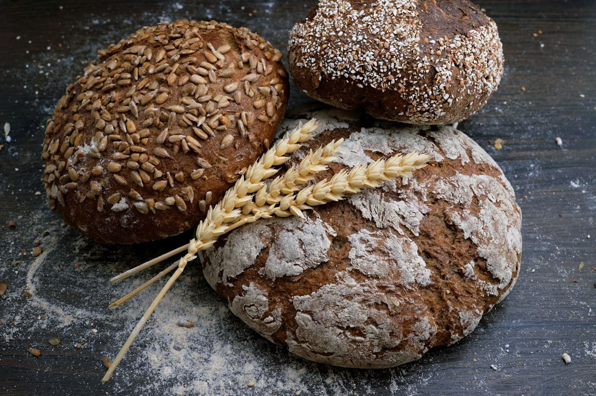
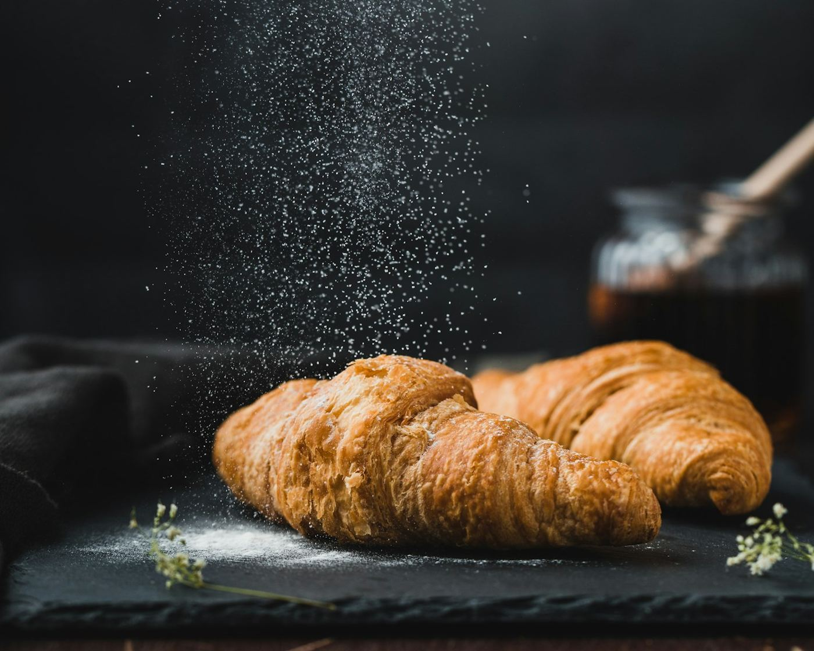
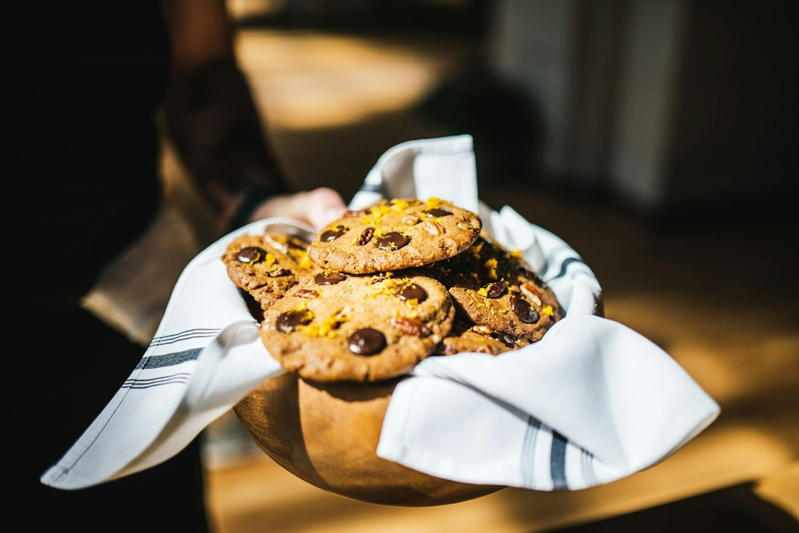

Pain de campagne
Au levain naturel, longue fermentation, croûte épaisse.
3,80 €
Pétri à la main, façonné le matin, cuit au four à sole. Des farines de meunier, du levain naturel, et le temps qu'il faut.
Des blés de meuniers de la région, moulus sur pierre.
Aucune chaîne, aucune surgélation. Rien que du frais.
Chaque matin dès 6h30, le dimanche compris.



Chaque nuit, le pétrin tourne pendant que Sedan dort. À 4h, les premières fournées entrent au four ; à 6h30, le rideau se lève sur l'odeur du pain chaud.
Une maison familiale, transmise de père en fils, fidèle aux gestes d'avant et curieuse de ceux d'aujourd'hui.
Notre histoireRéservez vos pains et viennoiseries en deux clics — ils vous attendent au comptoir.
Commander maintenant